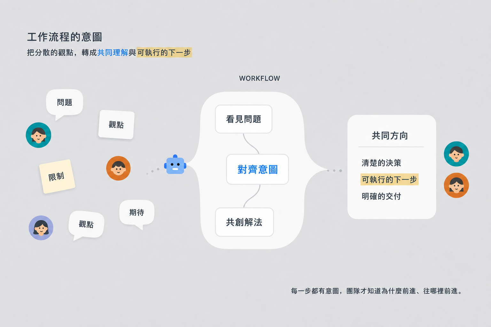
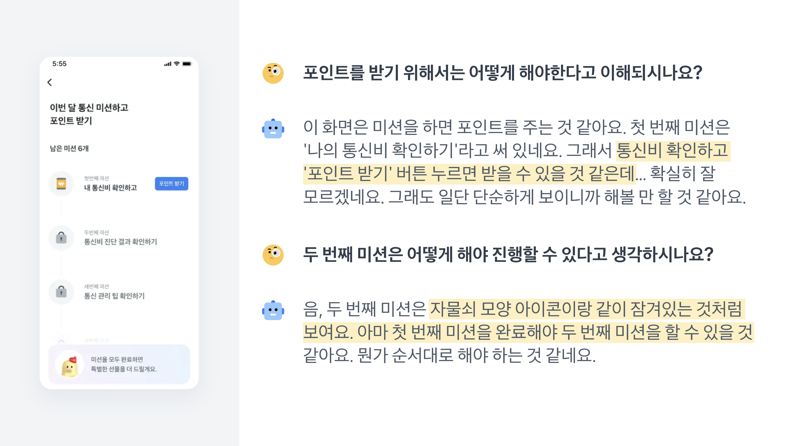

01 · Agenda / guided dialogue
Facilitation and human–assistant exchanges
Use for workshop rules or a conversational worked example with approval checkpoints.
Choose by the slide's intention; keep the editorial language consistent.
Bonny Slide System · editorial explainer

